Unsere Projekte
Neubau Mehrfamilienhaus Schlosspark Sargans
Als Elektrofachplaner begleitet die RK-Vision GmbH das exklusive Neubauprojekt in Sargans von Anfang an: 18 hochwertige Eigentumswohnungen mit einmaliger Aussicht auf das Schloss Sargans. Elektrokonzept, Beleuchtungsplanung, Ausschreibung und Ausführungsplanung – alles aus einer Hand, präzise und zukunftsorientiert geplant.
- Baujahr: 2026-2027
- Wohneinheiten: 21
- Tätigkeit: Elektrokonzept, Apparateplanung, Ausschreibung, Ausführungsplanung
Neubau Mehrfamilienhaus B27 Oberuzwil
Als Elektrofachplaner begleitet die RK-Vision GmbH das Neubauprojekt B27 in Oberuzwil von Anfang an: 14 hochwertige Eigentumswohnungen in modernem Wohnambiente. Elektrokonzept, Beleuchtungsplanung, Ausschreibung und Ausführungsplanung – alles aus einer Hand.
- Baujahr: 2025-2026
- Wohneinheiten: 14
- Tätigkeit: Elektrokonzept, Apparateplanung, Ausschreibung, Ausführungsplanung
Wohnüberbauung Flums
Die RK-Vision GmbH verantwortet als Elektrofachplaner die Wohnüberbauung Löwenstrasse in Flums – ein vielseitiges Neubauprojekt mit einem Mehrfamilienhaus mit 6 Wohnungen, 2 Einfamilienhäusern sowie 3 Doppeleinfamilienhäusern, verbunden durch eine gemeinsame Tiefgarage. In privilegierter Lage mit direktem Blick auf die Churfirsten plant die RK-Vision GmbH das Elektrokonzept, die Apparate- und Beleuchtungsplanung, die Ausschreibung sowie die Ausführungsplanung – alles aus einer Hand.
- Baujahr: 2025-2026
- Wohneinheiten: 14
- Tätigkeit: Elektrokonzept, Apparateplanung, Ausschreibung, Ausführungsplanung
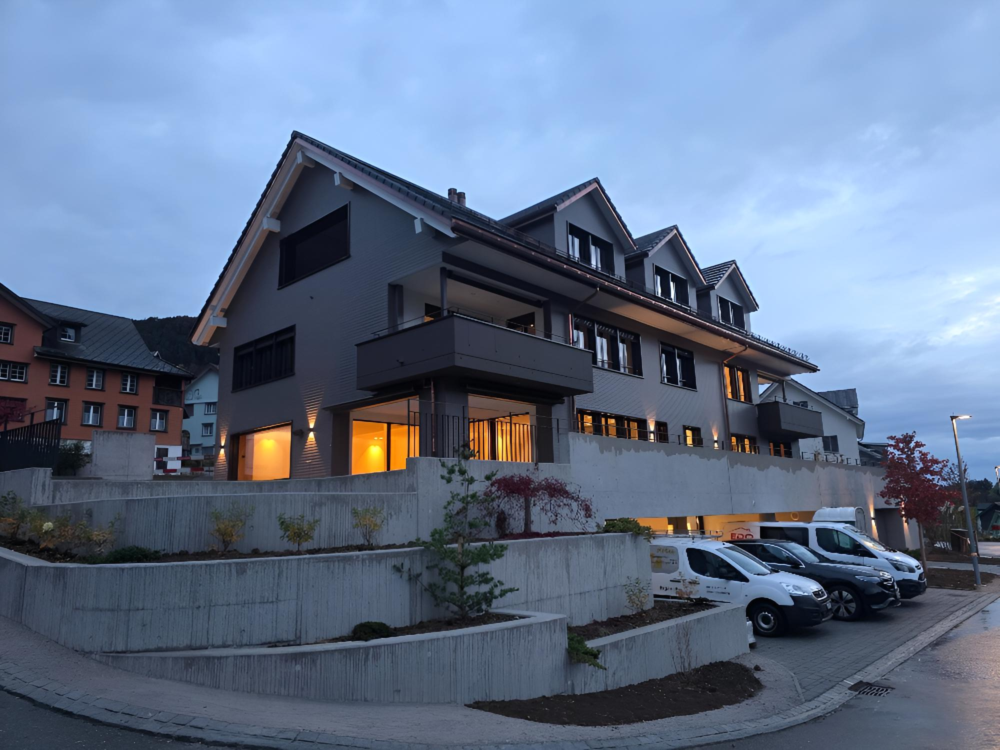
◆Neubau Mehrfamilienhaus Schäfliwiese
Beim Neubau Schäfliwiese in Libingen begleitete die RK-Vision GmbH die Entstehung von 4 hochwertigen Eigentumswohnungen als Elektrofachplaner. Von der Apparateplanung über die Gebäudeautomation bis zur Ausschreibung lieferte die RK-Vision GmbH massgeschneiderte Planungsleistungen – effizient, zukunftsorientiert und aus einer Hand.
- Baujahr: 2024-2025
- Wohneinheiten: 4
- Tätigkeit: Elektrokonzept, Apparateplanung, Gebäudeautomationsplanung Loxone, Ausschreibung
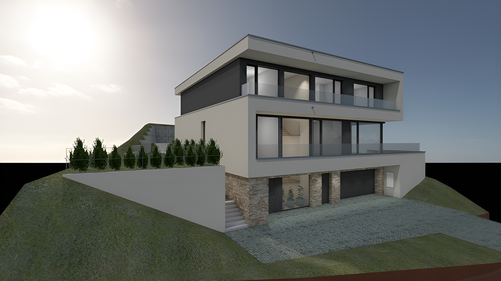
▼Neubau Einfamilienhaus Jonschwil
Beim Neubau eines exklusiven Einfamilienhauses in Jonschwil setzte die RK-Vision GmbH ihre Expertise als Elektrofachplaner gezielt ein. Mit der Apparateplanung und der Ausschreibung sorgte die RK-Vision GmbH für eine massgeschneiderte und hochwertige Elektrolösung – ganz nach den Wünschen und Ansprüchen des Bauherrn.
- Baujahr: 2022-2023
- Tätigkeit: Elektrokonzept, Apparateplanung, Ausschreibung
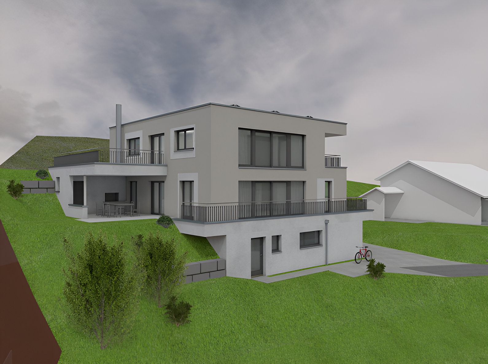
◇Neubau DEFH Mosnang
Beim Neubau eines modernen Doppeleinfamilienhauses in Mosnang begleitete die RK-Vision GmbH die zwei Wohneinheiten als Elektrofachplaner. Mit der Apparateplanung und der Ausschreibung lieferte die RK-Vision GmbH massgeschneiderte Planungsleistungen – individuell, sorgfältig und auf höchstem Niveau umgesetzt.
- Baujahr: 2025-2026
- Wohneinheiten: 2
- Tätigkeit: Elektrokonzept, Apparateplanung, Ausschreibung
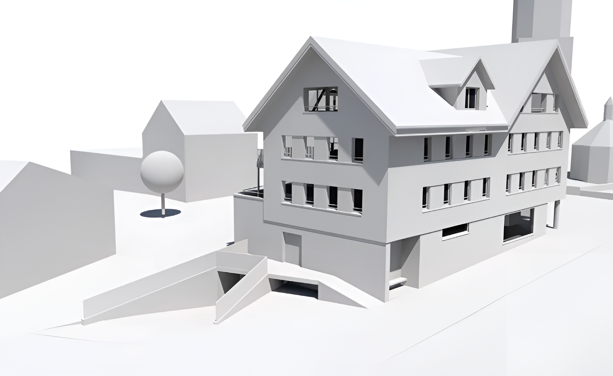
◇Neubau Volg Mosnang
Beim Neubau Volg in Mosnang vereinte die RK-Vision GmbH als Elektrofachplaner Wohnen und Gewerbe unter einem Dach: 9 moderne Mietwohnungen sowie eine neue Ladenfläche für den Volg Mosnang. Das bestehende Beleuchtungskonzept des Volg wurde nahtlos in die Planung eingebunden. Mit der Apparateplanung und der Ausschreibung lieferte die RK-Vision GmbH eine durchdachte und massgeschneiderte Elektroplanung – effizient und aus einer Hand.
- Baujahr: unbekannt
- Wohneinheiten: 9
- Tätigkeit: Elektrokonzept, Apparateplanung, Ausschreibung
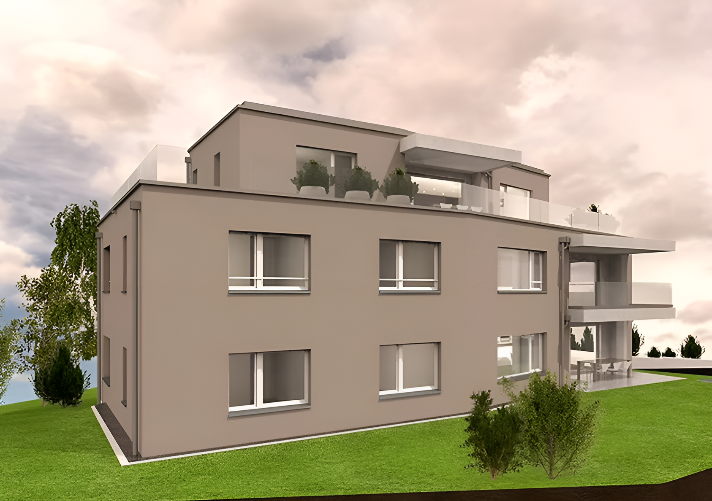
◇Neubau Mehrfamilienhaus Badiwiese
Beim Neubau eines Mehrfamilienhauses mit 3 hochwertigen Eigentumswohnungen in Oberuzwil begleitete die RK-Vision GmbH das Projekt als Elektrofachplaner von Anfang an. Vom Elektrokonzept über die Apparateplanung bis zur Ausschreibung lieferte die RK-Vision GmbH eine durchgängige und massgeschneiderte Elektroplanung.
- Baujahr: 2025-2026
- Wohneinheiten: 3
- Tätigkeit: Elektrokonzept, Apparateplanung, Ausschreibung
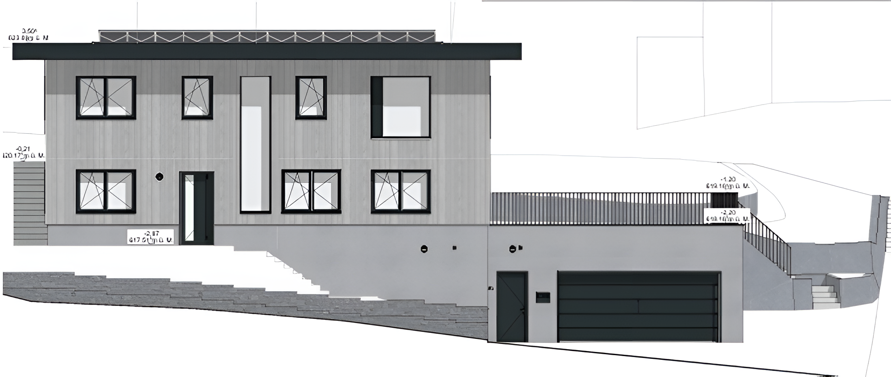
◇Neubau Einfamilienhaus Jonschwil
Beim Neubau eines Einfamilienhauses in Jonschwil setzte die Bauherrschaft auf die Expertise der RK-Vision GmbH: Mit der Apparateplanung, der Ausschreibung sowie einem massgeschneiderten Gebäudeautomationskonzept auf Basis von Loxone schuf die RK-Vision GmbH die Grundlage für ein smartes Zuhause.
- Baujahr: 2026-2027
- Tätigkeit: Elektrokonzept, Apparateplanung, Gebäudeautomationsplanung Loxone, Ausschreibung
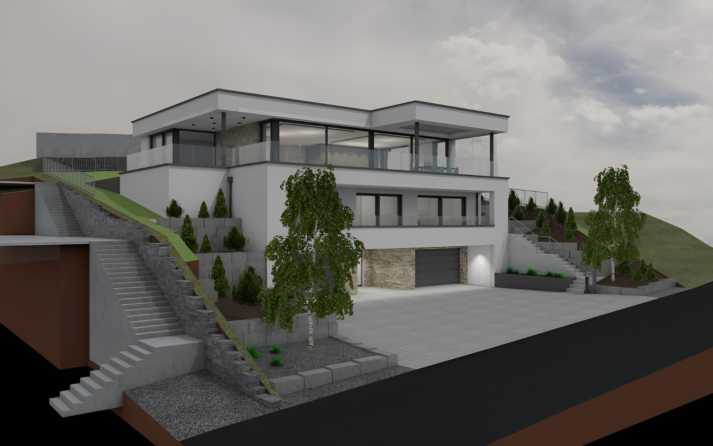
◇Neubau Einfamilienhaus Wil
Für den Neubau einer exklusiven Villa in Wil durfte die RK-Vision GmbH ihre Expertise als Elektrofachplaner unter Beweis stellen. Mit der Apparateplanung, einem massgeschneiderten Gebäudeautomationskonzept sowie der Ausschreibung schuf die RK-Vision GmbH die technische Grundlage für höchsten Wohnkomfort – intelligent, elegant und ganz auf die individuellen Ansprüche der Bauherrschaft zugeschnitten.
- Baujahr: 2026-2027
- Tätigkeit: Elektrokonzept, Apparateplanung, Gebäudeautomationsplanung Loxone, Ausschreibung
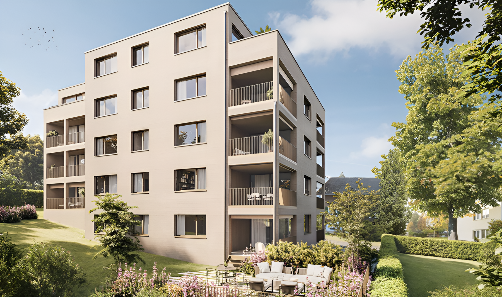
◇Neubau Mehrfamilienhaus Frauenfeld
Beim Neubau eines Mehrfamilienhauses mit 9 hochwertigen Eigentumswohnungen in Frauenfeld setzte die RK-Vision GmbH als Elektrofachplaner auf eine durchgängige und zukunftsorientierte Planung. Vom Elektrokonzept über die Apparateplanung bis zur Ausschreibung – und mit Loxone als Gebäudeautomationssystem in allen 9 Wohnungen – entsteht ein smartes Wohngebäude, das höchsten Ansprüchen an Komfort, Effizienz und modernes Wohnen gerecht wird.
- Baujahr: 2025-2026
- Wohneinheiten: 9
- Tätigkeit: Elektrokonzept, Apparateplanung, Ausschreibung
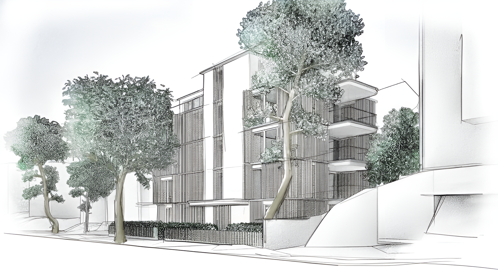
◇Neubau Mehrfamilienhaus Zürich
Beim Neubau eines Mehrfamilienhauses mit 8 Wohnungen und einer Gewerbefläche mitten in Zürich begleitete die RK-Vision GmbH das Projekt als Elektrofachplaner von Anfang an. Vom Elektrokonzept über die Apparateplanung bis zur Ausschreibung lieferte die RK-Vision GmbH eine durchdachte und massgeschneiderte Elektroplanung.
- Baujahr: 2026-2027
- Wohneinheiten: 8
- Tätigkeit: Elektrokonzept, Apparateplanung, Ausschreibung
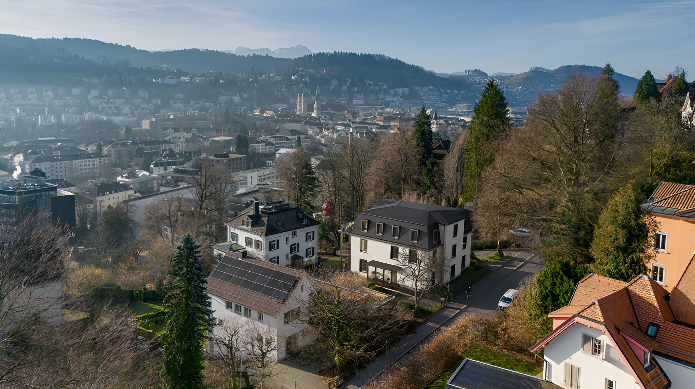
◇Neubau Mehrfamilienhaus Apfelberg
Beim Neubau Apfelberg in St.Gallen begleitete die RK-Vision GmbH die Entstehung von 4 hochwertigen Eigentumswohnungen als Elektrofachplaner. Von der Apparateplanung bis zur Ausschreibung lieferte die RK-Vision GmbH massgeschneiderte Planungsleistungen – effizient, zukunftsorientiert und aus einer Hand.
- Baujahr: 2026-2027
- Wohneinheiten: 4
- Tätigkeit: Elektrokonzept, Apparateplanung, Ausschreibung
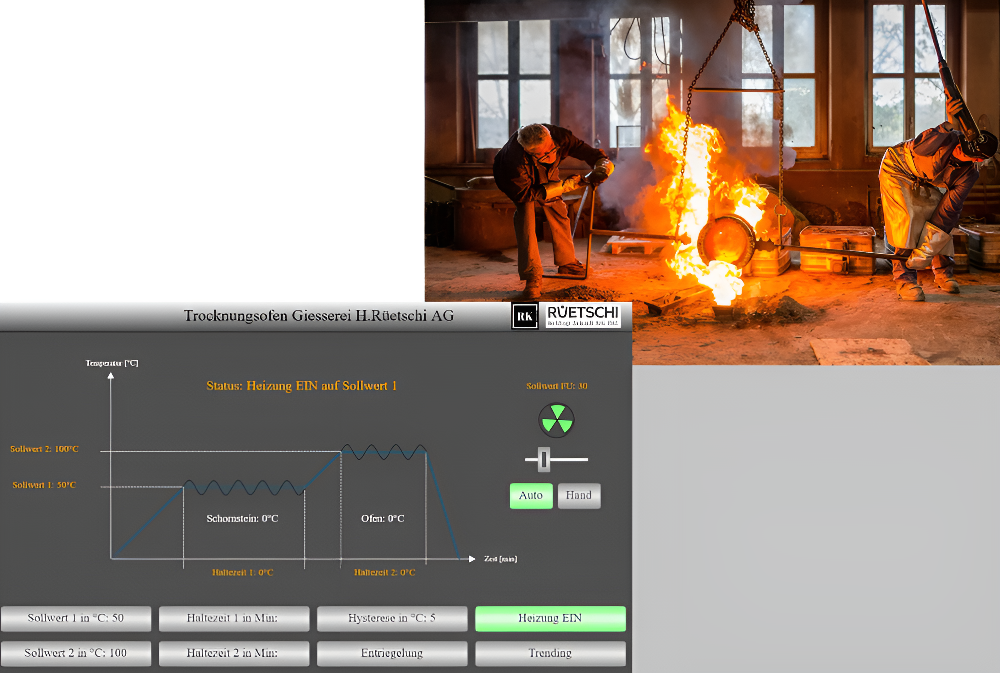
◇Automationsprojekt Trocknungsofen
Wo konventionelle Steuerungen an ihre Grenzen stossen, setzt die RK-Vision GmbH neue Massstäbe: Im Bereich kundenspezifischer Trocknungseinheiten übernimmt die RK-Vision GmbH die Hardware-Evaluation, das Hard- und Software-Engineering, die Klimaregelung sowie die Visualisierung. Das veraltete Steuerungssystem wurde durch eine moderne, gradgenaue Temperaturregelungen ersetzt.
- Baujahr: 2025
- Tätigkeit: Hardware & Softwareengineering, HTML Visualisierung, Inbetriebnahme
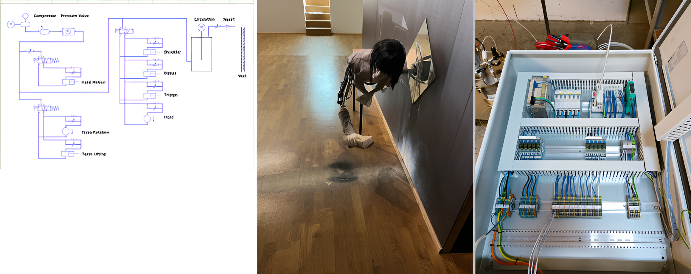
◇Automationsprojekt Kunst
Technik trifft Kunst: Die RK-Vision GmbH realisierte die ingenieurtechnische Umsetzung eines einzigartigen Kunstobjekts mit anspruchsvoller Hydraulikschaltung. Von der Hardware-Evaluation über das Hard- und Software-Engineering bis zur erfolgreichen Inbetriebnahme begleitete die RK-Vision GmbH das Projekt ganzheitlich.
- Baujahr: 2023-2024
- Tätigkeit: Hardware & Softwareengineering, HTML Visualisierung, Inbetriebnahme
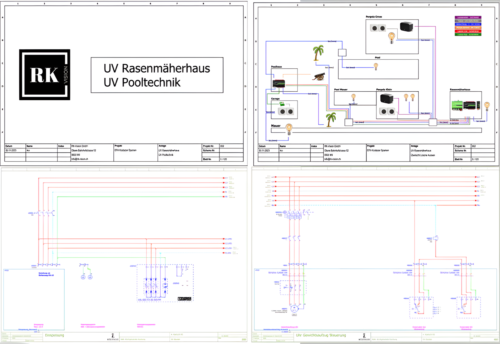
◇Hardware Engineering
Präzision beginnt bei der Planung: Die RK-Vision GmbH unterstützt ihre Kunden mit professionellen Hardware-Engineering-Dienstleistungen – von der Schaltplanerstellung bis zur vollständigen technischen Dokumentation. Mit leistungsstarken CAD-Tools wie EPLAN P8 liefert die RK-Vision GmbH durchdachte und normgerechte Lösungen, die höchsten industriellen Ansprüchen gerecht werden.
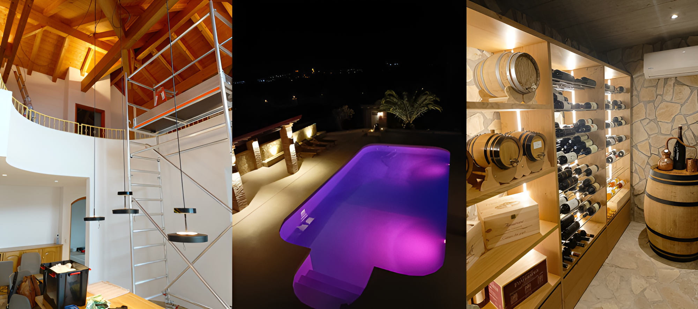
◇Gebäudeautomation / Smart Home
Diverse Gebäudeautomationsprojekte für Wohn- und Gewerbebau. Intelligente Gebäude beginnen mit durchdachter Planung: Die RK-Vision GmbH realisiert massgeschneiderte Gebäudeautomationslösungen mit Loxone, KNX und SPS-Programmierungen – vom ersten Konzept bis zur erfolgreichen Inbetriebnahme. Ob Beleuchtungssteuerung, Beschattung, Heizung oder Zugangskontrolle – die RK-Vision GmbH integriert alle Systeme präzise und zuverlässig zu einer smarten, zukunftsorientierten Gesamtlösung.